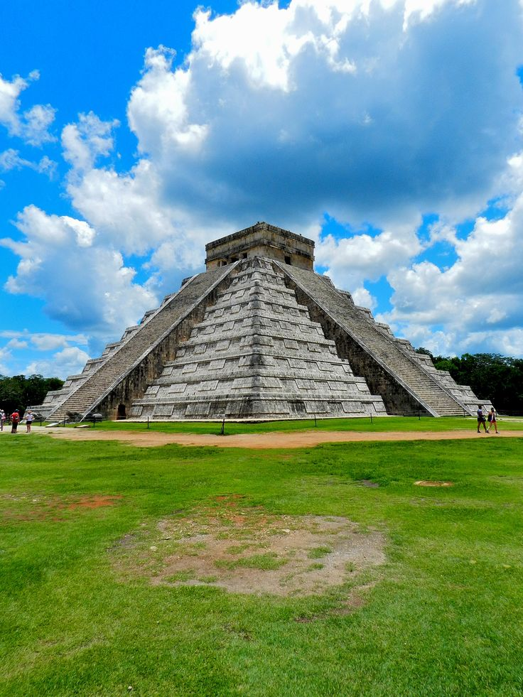
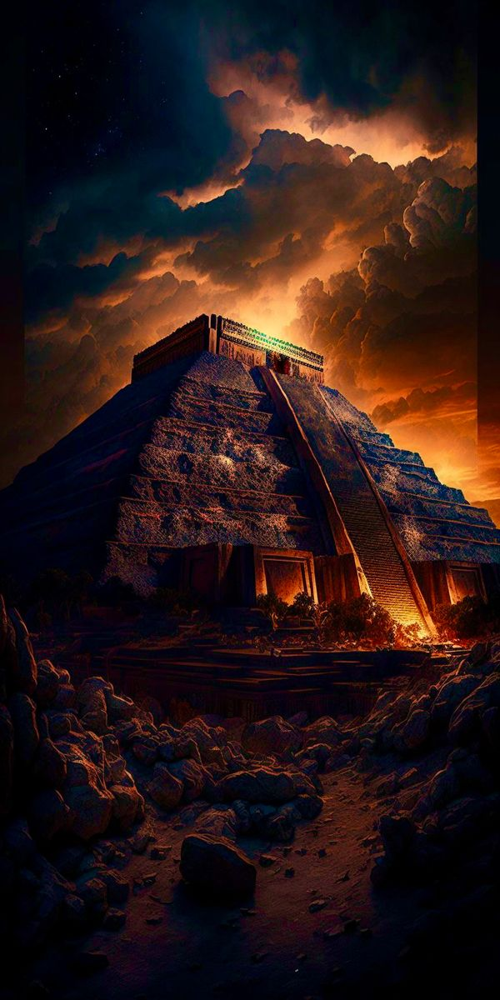

1. Teotihuacan Pyramid of the Sun:
Located in Teotihuacan, near Mexico City, the Pyramid of the Sun is one of the largest and most significant pyramids in Mesoamerica. It is part of the ancient city's impressive architectural complex.

2. Ceremonial and Astronomical Significance:
The Pyramid of the Sun served as a ceremonial structure with possible astronomical alignments. Its construction is attributed to the Teotihuacan civilization, and its purpose remains a subject of scholarly debate.

3. Teotihuacan Pyramid of the Sun:
Located in Teotihuacan, near Mexico City, the Pyramid of the Sun is one of the largest and most significant pyramids in Mesoamerica. It is part of the ancient city's impressive architectural complex.
Location:
The Templo Mayor is situated in the historic center of Mexico City, near the Metropolitan Cathedral and the National Palace.
Discovery and Excavation
1 .Rediscovery:
The remains of the Templo Mayor were rediscovered in 1978 during excavation work in Mexico City. The discovery provided invaluable insights into Aztec religious practices and urban planning.
2 .Archaeological Site:
The Templo Mayor site is now an archaeological site and an open-air museum, allowing visitors to explore the remnants of the ancient temple complex.
Museum:
The Templo Mayor Museum, adjacent to the archaeological site, houses a vast collection of artifacts recovered from the excavations, providing further context about Aztec culture and civilization.
Symbolism and Cosmology:
1 .Sacred Geography:
The location of the Templo Mayor in the center of the Aztec capital was significant, symbolizing the center of the world and the connection between the earth and the heavens.
2 .Duality:
The dual dedication to Huitzilopochtli and Tlaloc reflected the Aztec emphasis on dualities, such as life and death, war and agriculture, and sun and rain.
3 .Symbology:
The architectural elements, sculptures, and murals depicted various symbols related to Aztec cosmology, mythology, and the gods.